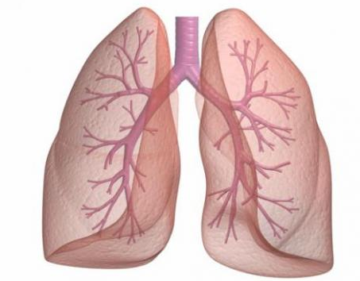

<!doctype html>
<html lang="en">

<head>
    <!-- <!— Required meta tags —> -->
    <meta charset="utf-8">
    <meta name="viewport" content="width=device-width, initial-scale=1, shrink-to-fit=no">

    <!-- <!— Bootstrap CSS —> -->
    <link rel="stylesheet" href="https://stackpath.bootstrapcdn.com/bootstrap/4.4.1/css/bootstrap.min.css"
        integrity="sha384-Vkoo8x4CGsO3+Hhxv8T/Q5PaXtkKtu6ug5TOeNV6gBiFeWPGFN9MuhOf23Q9Ifjh" crossorigin="anonymous">
</head>
<link rel="stylesheet" href="style.css" />


<body>
<div style="" id="export">

</div>
<script type="text/javascript">
var data = JSON.parse(localStorage.getItem('dataMedical'));
console.log(data);
const exp = document.querySelector('#export');
let expData = `
<div style="margin-left: 7%">
      
    </div>
<div class="certificate">

   <p>健康 証 明 書 (Medical Certificate)</p>
</div>
<div class="certificate">
   <p>This Certificate is issued under the of regulation I/9 of STCW conversion, 1978, as amended.</p>
</div>
<div class="container" align="center">
<table border="1" style="width:100%">
   <tr>
     <td colspan="6">氏名: Name: ${data.name}</td>
     <td colspan="4"> 生年月日 Date of birthday: ${data.birthday}</td>
   </tr>
   <tr>
     <td colspan="5">性別 Sex : ${data.sex}</td>
     <td colspan="5">国籍 Nationality : ${data.nationality}</td>
   </tr>
   <tr>
     <td colspan="3">身長 Height : </td>
     <td colspan="3" align="right">${data.height} cm</td>
     <td width="8%" align="center" rowspan="2">検尿 <br> Urinalysis</td>
     <td align="center" colspan="2">卵白 Albumin</td>
     <td align="center">${data.albumin}</td>
   </tr>
   <tr>
     <td colspan="3">体重 Weight :</td>
     <td colspan="3" align="right">${data.weight} kg</td>
     <td align="center" colspan="2">糖 Sugar</td>
     <td align="center">${data.sugar}</td>
   </tr>
   <tr>
     <td colspan="3">腹囲 Abdominal Circumferences</td>
     <td colspan="3" align="right">${data.abdominal} cm</td>
     <td rowspan="2" align="center">血液型 <br> Blood type</td>
     <td align="center" colspan="5" rowspan="2" >${data.bloodtype}</td>
   </tr>
   <tr>
     <td colspan="3">肺活量 Breathing capacity</td>
     <td colspan="3" align="right">${data.breathing} cc</td>
   </tr>
   <tr>
     <td colspan="3" rowspan="2">運動機能 Physical ability</td>
     <td colspan="3" align="right">${data.physical}</td>
     <td rowspan="2" align="center">血圧<br>Blood pressure</td>
     <td colspan="5" rowspan="2">收縮時 Systolic : ${data.systolic}
     <br>
     拡張時 Diastolic : ${data.diastolic}</td>
    </tr>
    <tr></tr>
    <tr>
      <td colspan="4" rowspan="2">色覚 Color vision <br>
          最近の検査日及び有効期限 <br>
          (Date of last exam in expiry date)</td>
      <td align="center" colspan="2" rowspan="2"> ${data.colorVision}</td>
      <td rowspan="2" align="center">血糖 Blood glucose</td>
      <td colspan="3" rowspan="2" align="center">♦ ${data.bloodGlucose}</td>
    </tr>
    <tr></tr>
    <tr></tr>
   <tr>
     <td colspan="3" rowspan="6">裸眼視力(矯正視力)<br>Distance vision unaided <br> (Distance vision aided)</td>
     <td colspan="2" rowspan="2" style="border-right: none;">右 Right</td>
     <td  style="border-left: none;" align="right">( ${data.rightDistane} )</td>
     <td rowspan="6">血中脂質檢查 <br> Blood Lipid exam</td>
     <td colspan="4" rowspan="2">LDLコレステロール <br>LDL Cholestrol <div style="float: right">♦ ${data.LDL}</div></td>
   </tr>
   <tr></tr>
   <tr>
     <td colspan="2" rowspan="2" style="border-right: none;">左 Left</td>
    <td  style="border-left: none;" align="right">( ${data.leftDistane} )</td>
     <td colspan="3" rowspan="2">中性脂肪<br>Triglyceride <div style="float: right">♦ ${data.trilyceride}</div></td>
   </tr>
   <tr></tr>
   <tr>
     <td colspan="2" rowspan="2" style="border-right: none;">両 Combined</td>
         <td  style="border-left: none;" align="right">( ${data.combineDistane} )</td>
     <td colspan="3" rowspan="2">HDLコレステロール <br> HDL Cholestrol <div style="float: right">♦ ${data.HDL}</div></td>
   </tr>
   <tr></tr>
   <tr>
     <td colspan="3" rowspan="6">聽力 Unaided hearing <br>
        補聴器によリ補われた聴力 (aided hearing)</td>
     <td colspan="2" rowspan="3" style="border-right: none;">左 Left</td>
     <td  style="border-left: none;" align="right">( ${data.rightHearing} )</td>
     <td rowspan="9">肝機能検査 Hepatic function exam</td>
     <td colspan="3" rowspan="3">GOT <br>Gluetamic oxaloacetic <br>transaminase <div style="float: right">♦ ${data.GOT}</div></td>
   </tr>
   <tr></tr>
   <tr></tr>
   <tr>
     <td colspan="2" style="border-right: none;">右 Right</td>
     <td  style="border-left: none;" align="right">( ${data.leftHearing} )</td>
     <td colspan="3" rowspan="3">GPT <br>Gluematic pyruvic <br>transaminase <div style="float: right">♦ ${data.GPT}</div></td>
   </tr>
   <tr></tr>
   <tr></tr>
   <tr>
     <td colspan="3">握力 <br> Grip <br> 右 Right 左 Left</td>
     <td colspan="3" align="center">${data.grip}</td>
     <td colspan="3" rowspan="3">γ - GTP <br>γ - glutanyl <br>transpeptidase <div style="float: right">♦ ${data.GTP}</div></td>
   </tr>


   <tr>
    <td width="5%" colspan="3" align="center" rowspan="2">検便 Stool exam.</td>
    <td colspan="2">虫卵<br>Parasite Egg</td>
    <td>▼ ${data.parasite}</td>
    </tr>

    <tr>
    <td colspan="2">ヘモグロビン<br>Hemoglobin</td>
    <td>♦ ${data.hemoglobine}</td>
    </tr>


   <tr></tr>
   
   
   <tr>
     <td align="center" width="5%" rowspan="16">
       胸<br>部<br>エ<br>ッ<br>ク<br>ス<br>線<br>検<br>査<br>Cheast <br>X-ray <br>exam
       <br>
       <br>
     </td>
     <td width="25%" colspan="2">撮影年月日 <br> Date of photographing.</td>
     <td colspan="3" align="center">${data.photographing}</td>
     <td width="20%" colspan="2">既往症 <br> Medical history</td>
     <td colspan="2" align="center">${data.medicalHistory}</td>
   </tr>
   <tr>
     <td colspan="2">フィルム番号<br>Film no.</td>
     <td colspan="3" align="center">${data.filmNo}</td>
     <td colspan="2">家族歴 <br> Medical history of family</td>
     <td colspan="2" align="center">${data.medicalHistoryFamily}</td>
   </tr>
   <tr>
     <td style="border-right: none" rowspan="14" colspan="3">
       
     </td>
     <td style="border-left: none" colspan="2" rowspan="14" align="top">Lung : ${data.lung}<br>
     <br>
     <br>
     Heart : ${data.heart}</td>
     <td align="center" colspan="2" rowspan="12">
       医師の指示及び就業上 の注意事項(見張リ業務不適、就業上の制約等) <br>
        Introduction (Fit or Unfit for for looking out duties, limitation for service at sea, etc) by doctor
     </td>
     <td colspan="2" rowspan="12" align="center">${data.intruction}</td>
   </tr>
    <tr></tr>
    <tr></tr>
    <tr></tr>
    <tr></tr>
    <tr></tr>
    <tr></tr>
    <tr></tr>
    <tr></tr>
    <tr></tr>
    <tr></tr>
    <tr></tr>
     <tr>
     <td align="center" colspan="2" rowspan="2">備考 Remarks</td>
     <td colspan="2" rowspan="2" align="center">${data.remaks} </td>
   </tr>
   <tr></tr>
   <tr>
     <td colspan="6" rowspan="3">かくたん檢查 <br> Sputum exam. <div style="float: right; margin-right: 10px;">♦ ${data.sputum}</div></td>
     <td colspan="2" rowspan="2">判定<br>Diagnosis</td>
     <td align="center" style="" colspan="2" rowspan="2">${data.fit ? '合 <br> Fit' : '否 <br> Unfit'}</td>
   </tr>
   <tr></tr>
   <tr></tr>
   <tr>
     <td rowspan="3" colspan="6">心電図検査 <br> Electrocardiogram exam. <div style="float: right; margin-right: 10px;">♦ ${data.electrocardiogram}</div></td>
     <td colspan="2" rowspan="2">判定年月日 <br> Date of diagnosis</td>
     <td rowspan="2" colspan="2" align="center">${data.dateDiagnosis}</td>
   </tr>
   <tr></tr>
   <tr>
     <td colspan="2" >有効期限 Expiry date<br>(1 year from diagnosis)</td>
     <td colspan="2" align="center">${data.expiry}</td>
   </tr>
   <tr></tr>
   <tr height="50">
     <td valign="top" style="border-right: none" rowspan="3" colspan="3">船員の署名</td>
     <td valign="top" style="border-left: none" rowspan="3" colspan="7">Signature of holder of this certificate</td>
   </tr>
  <tr></tr>
  <tr></tr>
   <tr height="50">
     <td valign="top" colspan="10">医師の署名並びに所属機関の住所及び印 <br> Signature of doctor, address and stamp of the hospital</td>
   </tr>
   <tr></tr>
   <tr height="50">
     <td style="border-right: none" colspan="8">※船員の氏名·生年月日については明瞭に記入すること。<br> Write name and date of birth in clear block style</td>
     <td style="border-left: none" valign="bottom" colspan="2"></td>
   </tr>
 </table>
</div>`
exp.innerHTML = expData
print()
</script>
    <script src="https://code.jquery.com/jquery-3.4.1.slim.min.js"
        integrity="sha384-J6qa4849blE2+poT4WnyKhv5vZF5SrPo0iEjwBvKU7imGFAV0wwj1yYfoRSJoZ+n"
        crossorigin="anonymous">
    </script>
    <script src="https://cdn.jsdelivr.net/npm/popper.js@1.16.0/dist/umd/popper.min.js"
        integrity="sha384-Q6E9RHvbIyZFJoft+2mJbHaEWldlvI9IOYy5n3zV9zzTtmI3UksdQRVvoxMfooAo"
        crossorigin="anonymous">
    </script>
    <script src="https://stackpath.bootstrapcdn.com/bootstrap/4.4.1/js/bootstrap.min.js"
        integrity="sha384-wfSDF2E50Y2D1uUdj0O3uMBJnjuUD4Ih7YwaYd1iqfktj0Uod8GCExl3Og8ifwB6"
        crossorigin="anonymous">
    </script>
</body>

</html>
